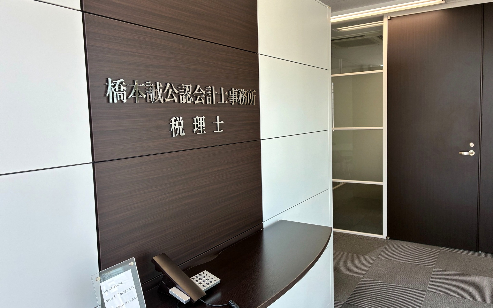
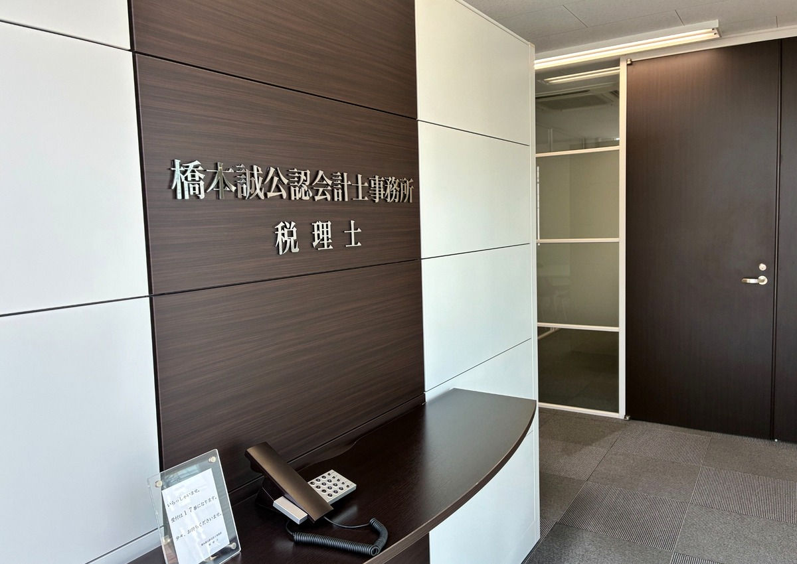
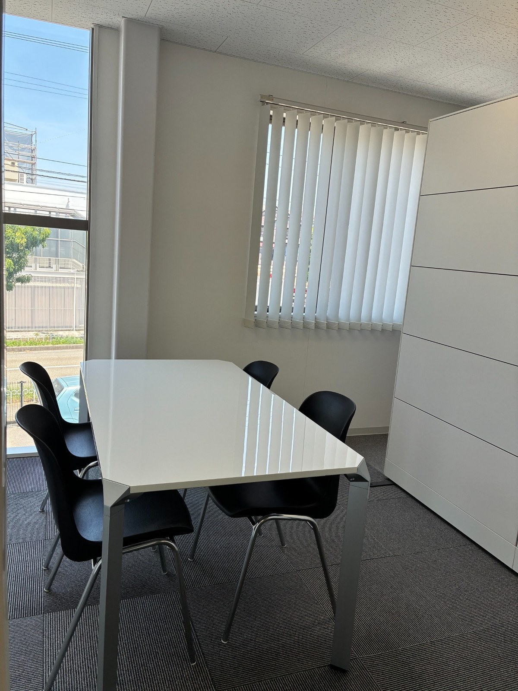
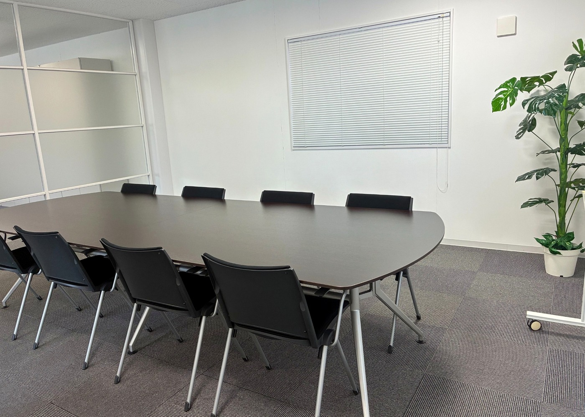

質問しやすい距離
少人数のため、疑問を抱え込まず、その都度確認しながら仕事を進められます。

数字を扱う仕事ですが、その先にいるのは人です。
誠実に学び、信頼を積み重ねながら、着実に専門性を身につける。ABOUT US
橋本誠公認会計士事務所は、高知市で税務顧問、法人の決算・申告、 相続税申告などを行う会計事務所です。
少人数の職場だから、業務の一部分だけではなく、仕事全体の流れを身近に感じられます。 最初からすべてを求めるのではなく、基礎を確かめながら、理解度と経験に応じて担当範囲を広げます。
事務所が一方的に「育てる」のではなく、本人が学び、考え、経験を重ねる中で育っていく。 私たちは、そのための環境を整え、成長の歩みを支えることを大切にしています。


WORKING ENVIRONMENT
特別な制度を並べるよりも、日々の仕事の中で質問できること、 確認を受けながら経験を積めることを大切にしています。
少人数のため、疑問を抱え込まず、その都度確認しながら仕事を進められます。
会計入力や資料整理から始め、月次、決算・申告補助、顧客対応へと経験を重ねます。
知識だけでなく、資料の見方、説明の仕方、相手への配慮まで、仕事を通して学びます。
高知の企業や暮らしに関わりながら、長く生かせる会計・税務の力を育てられます。

WORK WITH TRUST
GROWTH PATH
資料整理、会計ソフトへの入力、事務所内の業務の流れを理解します。
月次業務や決算整理を、確認を受けながら経験します。
法人税・消費税などの申告書作成補助を通して、税務実務を学びます。
経験と理解度に応じて顧客を担当し、説明力や対応力を高めます。
WHO WE ARE LOOKING FOR
分からないことを、そのままにせず確認できる方
正確さと誠実さを大切にできる方
会計・税務の専門性を、時間をかけて身につけたい方
周囲と協力しながら、落ち着いて仕事に向き合える方
REQUIREMENTS
※採用時の労働条件は、書面で正式にご案内します。
FAQ
応募前のご質問も受け付けています。
はい。所内業務から始め、理解度に応じて段階的に担当範囲を広げます。
会計入力や資料整理などの基本から始め、確認を受けながら月次・決算・申告補助を経験します。
勤務時間や働き方について、状況に応じてご相談ください。
はい。電話またはメールでお問い合わせください。
ENTRY / CONTACT
応募前のご質問も歓迎します。仕事内容や働き方について、気になることがあればお問い合わせください。